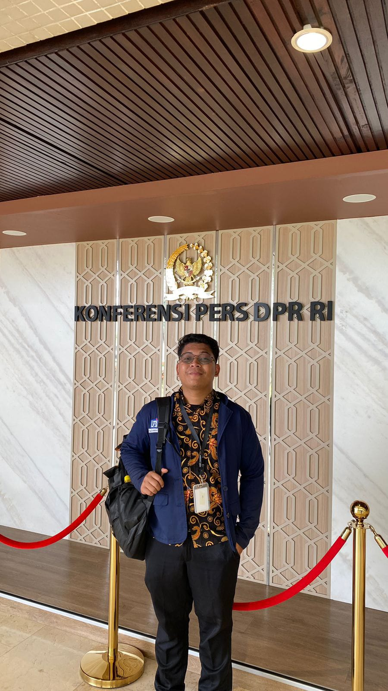
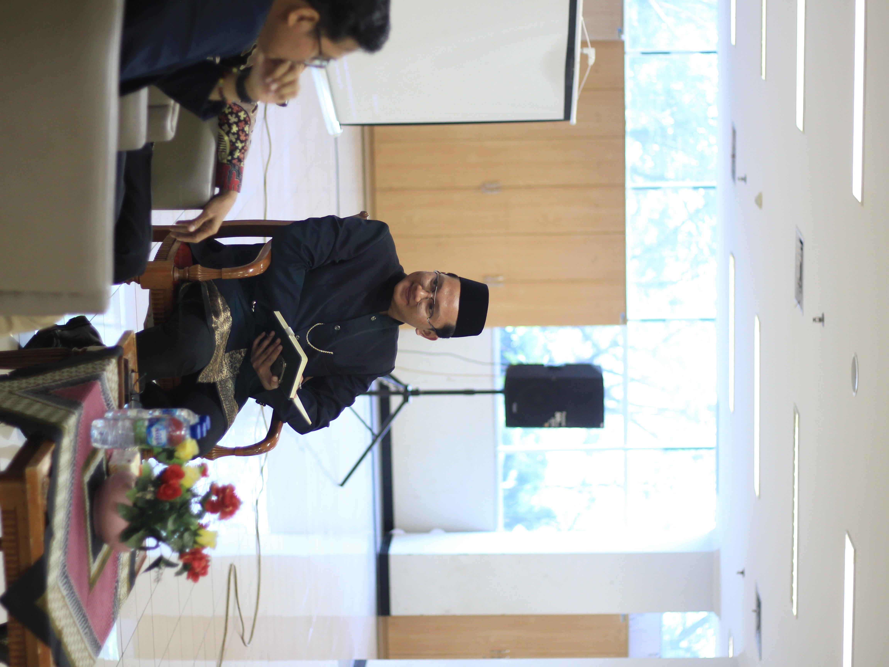

Latar Belakang
Malaka Muda adalah komunitas independen yang lahir dari keresahan sekaligus harapan. Kami tidak terafiliasi dengan partai politik, lembaga, atau organisasi manapun. Terinspirasi oleh semangat pemikiran Tan Malaka, kami menolak tunduk pada arus kebodohan dan ketidakadilan. Kami menyalakan kembali api kesadaran — bahwa berpikir kritis dan bertindak rasional adalah langkah pertama menuju perubahan nyata.
Semangat & Tujuan
Tujuan kami sederhana tapi mendalam: menghidupkan kembali gagasan Tan Malaka dalam dunia modern. Kami ingin menanamkan kesadaran berpikir kritis agar setiap individu mampu melihat dunia dengan logika, bukan sekadar opini.
Bidang Gerak Kami
- Edukasi — Membangun ruang belajar alternatif untuk generasi muda.
- Sosial — Bergerak langsung dalam aksi sosial dan solidaritas lintas komunitas.
- Literasi — Mendukung kegiatan sosial dan pendidikan berbasis kesadaran kritis.
Struktur Pengurus

Herdandi Dwi Putra, Amd. Kom
Founder & BOD Program

Fajri Ramadhan, S.AB
Founder & BOD HRD Officer

Maulana Ibrahim Sandra
Founder & BOD Relation Officer